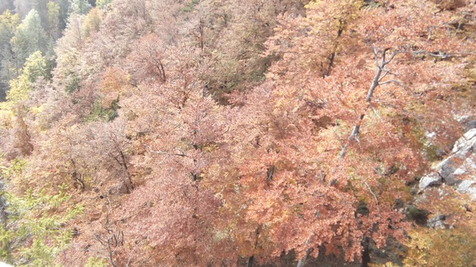

Woke up early, met Betty, Ruth, a fellow named Maxwell and a girl named Virginia downstairs in Culmann, then headed to the train station. We caught the 7:04 to Neuchatel, where we would transfer to another short train to Creux au Van and rendezvous with Simon and his van’s passengers.
I slept on the first train. At the Neuchatel station, we all went to get food, my supplies being pitiably depleted at home. I found a big baguette, a pack of slices of Gruyere cheese, and a surprisingly cheap little box of fresh cheese for 25 Rp. We hauled out of the store and barely got our connection to Creux au Van; I opened up the little packet of cheese and tasted it. Blecch! It was disgusting. I passed it on to Betty and Ruth and Virginia for inspection, and they realized that the packet was fresh yeast(!).

I discarded that packet like a hot potato so it wouldn’t stink up my bag, then proceeded to eat my Gruyere and baguette.
We got off the train a bit later into the sleepy little village of Creux au Van. We met Simon’s folks without incident, and walked through the village to the hike entrance. The village was as picturesque as it could be, little stuccoed houses in cheery yellows and creamy whites, snug in a valley of green pasture hugging the railway. Up the hill we walked, up the driveway of a farmhouse, to the trail entrance.
On the trail, Betty and Ruth and I broke ahead of the pack and forged merrily upwards. The trail was lined with dense vegetation like Galbraith, and the air was wet and foggy.

Alexei came to join us, then we waited for the main group, then broke away again, over and over. At one point, we stopped and cut ourselves sticks from saplings (can’t do that in Bellingham!) Simon and I sawed ourselves some sweet hazelwood poles, mine heavy, thick and about 6 feet tall. We came upon a guesthouse/farmhouse and admired the goats.
Eventually, Alexei led us up some steep shortcuts to the top.
The group was not far behind and we stopped for lunch. Some kind fellow traded me some sausages for Gruyere cheese, and Ruth broke out the peanut-butter M&M’s (reminded me of Thanksgiving!).
Then we walked down to a perilous cliffside and took turns climbing onto a rocky precipice. The view was legendary.

Then we walked along the cliffside–Ruth remarked that it was like the Pixar movie Up!

We took sooooo many pictures and goofed off on the cliffside for a long time.
The way back down was also incredibly pretty. Janna and Maxwell and I talked about math, and Ruth and Betty and I admired the incredible scenery.
However, the trail was coated with an incredibly slippery slime. My method of descent was “slip and catch”; incredibly, I didn’t wipe out once, perhaps due to my hazelwood staff, whose end split and caught a little flame of leaves:

At last we were back to the bottom of the trail.
We bought tickets back to Neuchatel. Ruth and Betty and I waited for Simon and company and played frisbee! Then we met Simon and company by the shore of a huge lake. I rolled up my trousers and waded in. It was really lovely. After that, Oliver was starving and we went to a creperie. The place was packed! Every table inside was reserved. But they let us order and eat outside. I got an amazing crepe with plum sauce and cinnamon ice cream, plus a sausage, spinage and cheese crepe that was also ridiculously good.
On the way back Simon took different passengers so that the Gleis 7 holders, including me, would take the train. I ran back to the train with Janna and Oliver. The train was packed, although all the 1st class areas were almost empty. I put on my headphones and rocked out while doing homework.
Got back pretty late to Culmann and then crashed!